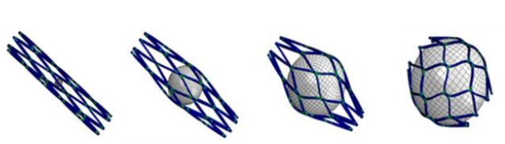

{{ page.title }}
Annual Scientific Meeting of Taiwanese Society of Biomechanics (TSB 2020)
Jiong-Hong Chen1 Hao-Lun Hsu1 Wen-Hsin Yang2 Yi-Chun Chen1 Hao-Ming Hsiao1
1National Taiwan University 2University of Rochester

|
Abstract
We propose the world’s first spherical stent,which can be deployed in the upstream of an artery
to reduce the blood flow to the downstream cancer cells. Computational models were developed to
predict the device’s mechanical integrity and hemodynamic occlusion performance. Simulation
results suggested that devices with the metal density of 14-27% would reduce the average blood flow
rate by 30-50%. Conceptual prototypes were made with a series of manufacturing procedures and
tested by flow experiments for proof of concept. Experimental results showed that the spherical stent
with the metal density of 27% was able to reduce 44% of the flow, which agreed well with the
simulation results.
|
Paper: [PDF] Slides: [PDF]
|
Bibtex
@article{chen2017stent,
author = {Jiong-Hong Chen and Hao-Lun Hsu and Wen-Hsin Yang and Yi-Chun Chen and Hao-Ming Hsiao},
title = {New Spherical Stent Concept for Cancer Occlusion}
}